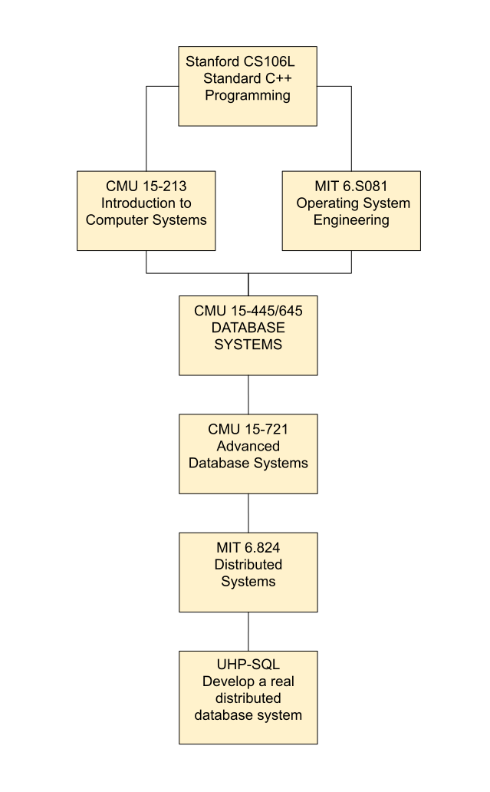

关于我们
我们是一个专注于解读国外名校分布式存储相关开源课程的组织，以下是分布式存储方向的自学课程计划：

如何参与本书编辑
1.克隆代码
git clone https://github.com/eraft-io/eraft-io.github.io.git
git checkout gitbook
2.在本地安装 gitbook 环境（以 linux mac 为例）
先安装 nvm
curl -o- https://raw.githubusercontent.com/nvm-sh/nvm/v0.34.0/install.sh | bash
修改 ~/.bash_profile 文件 vim ~/.bash_profile
# This loads nvm
export NVM_DIR="$HOME/.nvm"
[ -s "$NVM_DIR/nvm.sh" ] && . "$NVM_DIR/nvm.sh"
改完之后
source ~/.bash_profile
切合适的 node 版本
nvm install 10.21.0
nvm use v10.21.0
安装 gitbook-cli
npm install gitbook-cli -g
3.本地运行
gitbook serve
4.改完 markdown 文件之后，build 产出到 _book 目录
gitbook build
5.提交上传修改到 git 仓库
fork 一个分支
修改完提交 mr 到 gitbook 分支